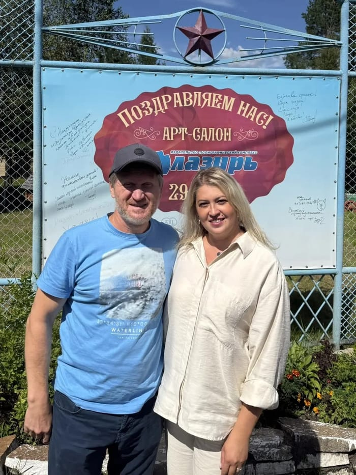
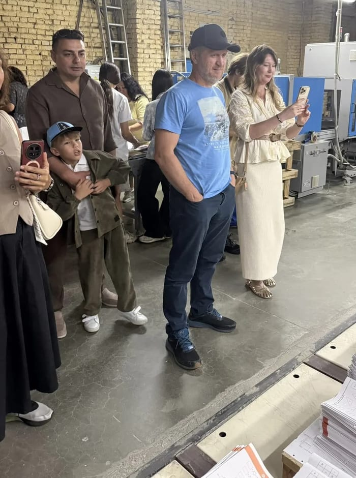
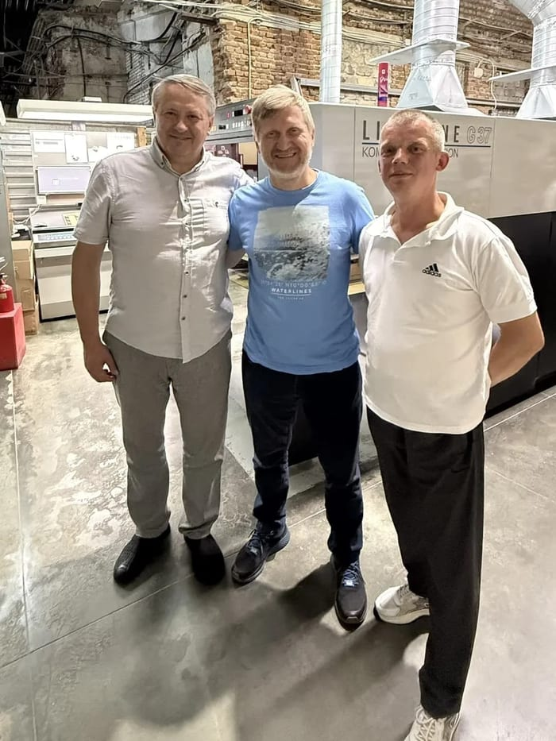
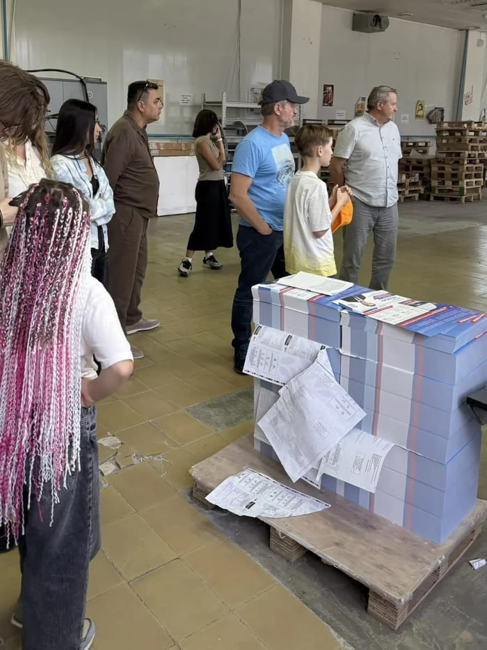
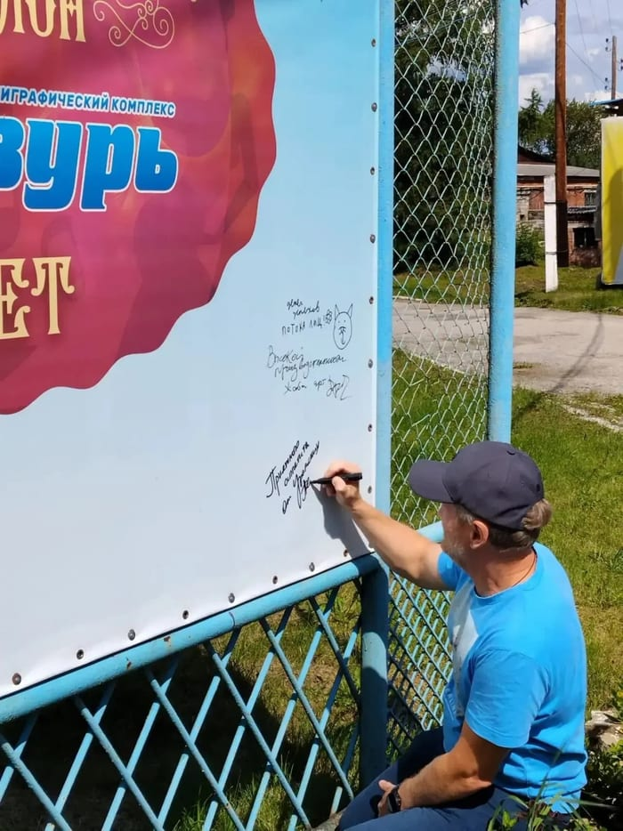
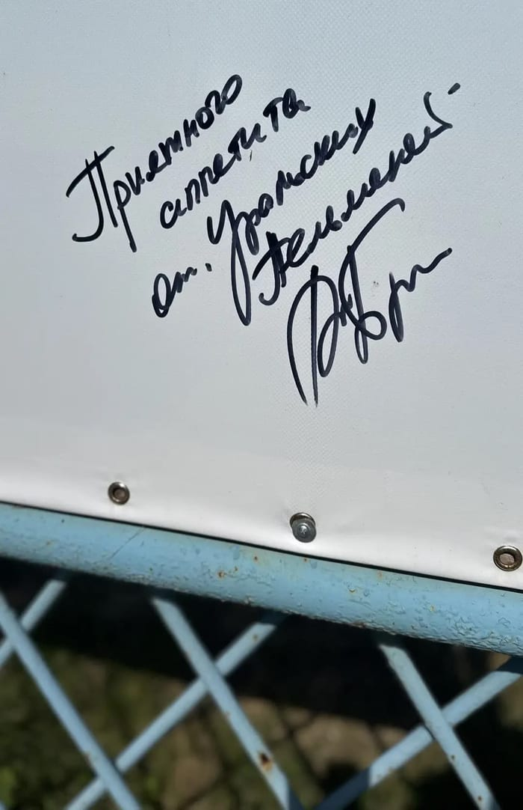
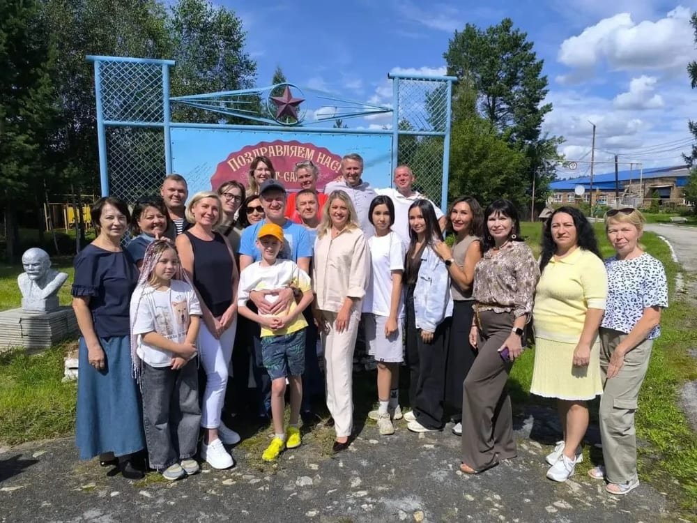

Гость нашего цеха: Андрей Рожков из «Уральских пельменей» заглянул в «Лазурь»
 По территории «Лазури» гостя провели с настоящей
экскурсией — от проходной до печатного цеха
По территории «Лазури» гостя провели с настоящей
экскурсией — от проходной до печатного цеха
У нас не всегда в гостях кандидаты и партнёры по бизнесу — иногда заходят просто так, без повестки и коммерческого предложения. На днях в типографию заглянул Андрей Рожков — актёр и легенда «Уральских пельменей». Никакого специального повода не было: приехал посмотреть, как печатаются тиражи, познакомиться с коллективом — и, как выяснилось, заодно оставить о себе память в самом «пельменном» духе.
Кто заглянул в гости
Андрей Рожков родился в Свердловске в 1971 году и почти всю жизнь связан с командой, которая в итоге прославила Урал на всю страну. С 1994 по 2016 год он был капитаном «Уральских пельменей», их художественным руководителем, актёром и автором — а команда за это время успела стать чемпионом Высшей лиги КВН 2000 года. Кстати, забавный факт для гостей типографии: название команде дал вовсе не рецепт, а свердловский ресторан «Уральские пельмени», в честь которого её и назвали. Фирменный номер актёра — мгновенное перевоплощение в самых неожиданных персонажей, и в этом с ним до сих пор мало кто может потягаться.

Визит совпал с праздником: в этом году «Лазурь» отмечает 29 лет, и на входе гостей встречал баннер для пожеланийЭкскурсия по цехам
Гостя провели по производству по-настоящему, без глянца: старые кирпичные стены цеха, вентиляция под потолком, офсетная машина за работой — и никакой заготовленной массовки, обычный рабочий день типографии. Рожкову показали, как лист бумаги проходит путь от печатного полотна до готовой продукции, и заодно — склад, где тираж уже упакован и ждёт отгрузки.

Цех со старой кирпичной кладкой — здесь печатается значительная часть тиражей «Лазури»
У офсетной машины Lithrone G37 — с теми, кто печатает тиражи каждый деньНа складе гостя встретила уже готовая продукция — сложенные на палеты пачки с отпечатанными материалами, упакованные и подписанные для отправки заказчикам. Обычная для «Лазури» картина, но для гостя, который сам всю жизнь на сцене, — редкая возможность заглянуть за кулисы совсем другого производства.

На складе — тираж, упакованный и готовый к отгрузкеПельменный юмор на юбилейном баннере
На входе в «Лазурь» по случаю 29-летия компании установили баннер, на котором гости праздника оставляют пожелания — кто-то в прозе, кто-то с рисунком. Рожков в стороне не остался и, верный привычке доводить до идеала любую сценку, тоже взял в руки маркер.

Момент истины: автограф в процессеВместо дежурного «желаю успехов и процветания» на баннере появилась вполне пельменная по духу надпись — с фирменной подписью и пожеланием, которое сложно перепутать с чьим-то ещё:
Приятного аппетита от «Уральских пельменей»! — Андрей Рожков, автограф на юбилейном баннере «Лазури»

Тот самый автограф — теперь часть истории «Лазури»Кстати, у шутки нашлась и вполне производственная рифма: «тесто» мы, конечно, не раскатываем — зато каждый день запускаем в печать сотни листов бумаги и картона, которые на выходе становятся готовым тиражом.
На память — общее фото
Экскурсия закончилась тем, чем обычно заканчиваются такие визиты — общим фото у входа, с сотрудниками, которые в этот день оказались рядом. Получилось по-домашнему: без сценария, зато с настроением.

На память — общее фото у входа в «Лазурь»А если вам нужен тираж — а не только автограф на баннере — обращайтесь.
Связаться с «Лазурью» →